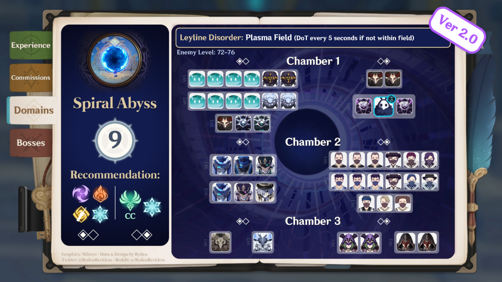
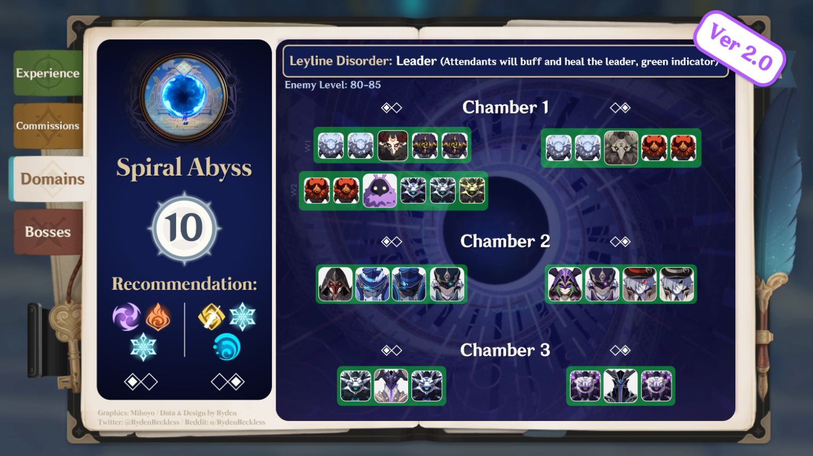
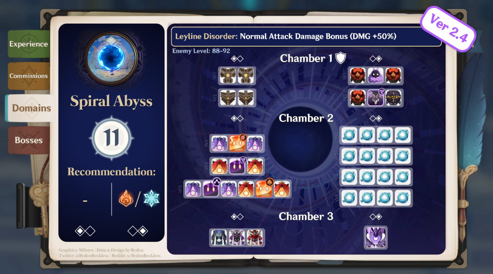
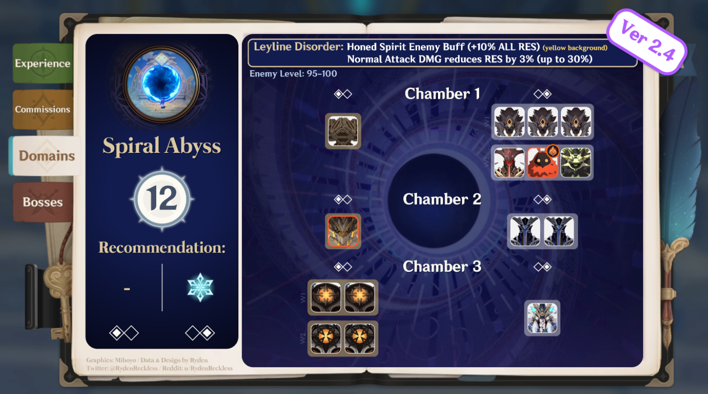
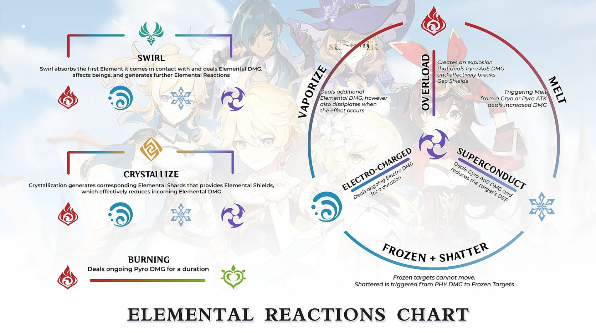

Hello and welcome! To the website will give you different infos and guides relating to Genshin Impact characters. These infos contain how to increase your maximum damage output, best character builds, and best team compositions. It will also contain different strategies on how to beat the spiral abyss(abuse) and get a perfect clear in the current abyss rotation. If there are any mistakes among the information given, please inform me immediately.
Spiral Abyss Strategies:
The Spiral abyss has been a pain for many players due to difficulty of it. Difficult? Say no more. This section will help you in your abyss runs and allow you to perfectly clear the abyss with ease.
| Floor 9, the first step to insanity in the upper floors. There are a variety of enemies ranging from slimes to fatui cicin mages. The enemies on this floor are often spread far and wide so it best that you include a crowd control character in your team. Pyro characters also benefit greatly from this floor as many of the enemies here are weak to pyro damage. It is important to know that you should use the proper elements to counter different elemental shields | |
|  | |
| Character that you should use in the first half: | Characters that you should use in the second half: |
| Yoimiya, Hu tao, Klee, Diluc, Yanfei, Amber, Xiangling, Yanfei, Bennet, Xinyan, Thoma, Itto, Zhongli, Kazuha, Raiden, Traveler(electro), Lisa, Fischl, Beidou, Keqing, Sara | Traveller(anemo), Jean, Venti, Sucrose, Xiao, Kazuha, Ayaka, Shenhe, Ganyu, Qiqi, Eula, Razor, Aloy, Diona, Rosaria, Kaeya, Chongyun |
| Floor 10, the second step to insanity as you continue climbing the upper floors. This floor consists of numerous Hilichurls and Fatui mobs but the real problem lies in the final chamber. The abyss lector and herald, two high-ranking abyss monsters that require elemental reactions instead of elemental damage to beat. It is important to know what element to use in order to destroy the elemental shields of the abyssal monsters. | |
|  | |
| Character that you should use in the first half: | Characters that you should use in the second half: |
| Yoimiya, Hu tao, Klee, Diluc, Yanfei, Amber, Xiangling, Yanfei, Bennet, Xinyan, Thoma, Ayaka, Shenhe, Ganyu, Qiqi, Aloy, Diona, Rosaria, Kaeya, Chongyun | Yoimiya, Hu tao, Klee, Diluc, Yanfei, Jean, Venti, Sucrose, Xiao, Kazuha, Ayaka, Shenhe, Ganyu, Qiqi, Aloy, Diona, Rosaria, Kaeya, Chongyun |
| Floor 11, you climb closer and closer to insanity and now you are at the breaking point on whether you continue or not. Most players stop here as it is incredibly difficult to complete due to the limitations on the characters you can use. Starting from this floor, it is important to learn how to dodge and properly do rotations. Without these, floor 11 would be harder than it should. | |
|  | |
| Character that you should use in the first half: | Characters that you should use in the second half: |
| Kokomi, Mona, Xingqiu, Tartaglia, Ayaka, Shenhe, Ganyu, Eula, Diona, Rosaria, Chongyun | Yoimiya, Hu tao, Klee, Diluc, Yanfei, Xiangling, Bennet, Kazuha, Ayaka, Shenhe, Ganyu, Eula, Diona, Rosaria, Chongyun, Zhongli |
| Floor 12, the final point. Insanity occurs as you attempt to complete this floor but do not worry! This floor is but an ease for us here at the Genshin Strategists. In this floor there are numerous enemies that have over 500k hp so it is important to know that you must heavily invest in your characters before attempting this floor. The floor consists of abyssal mobs, ruin monsters, a chonky toad, and a Samurai that can kill your characters in one shot. It is important to know that shields may not be best in the second half as there are rifthounds that counter shields. To beat this floor, you must properly do rotations to near perfection, use elemental reactions to the utmost, and most especially, learn how to iframe(Immunity frame) | |
|  | |
| Character that you should use in the first half: | Characters that you should use in the second half: |
| Zhongli, Kazuha, Raiden, Ayaka, Shenhe, Hu tao, Bennet, Xingqiu, Xiangling, Tartaglia, Itto, Kokomi, Yoimiya | Ayaka, Shenhe, Xingqiu, Kokomi, Bennet, Diona, Kazuha, Sucrose |
| Elemental reactions |  |
| Rotations | It is important to constantly quick swap characters are use their abilities to maximize you damage per minute. You also regain your elemental burst quickly this way |
| Charge bursts | Whenever you have more than enough time, make sure to fill up everyone's elemental burst energy requirement to prepare for the next chamber |
| If you fail once, learn your mistake first before you continue | Continuously failing may affect your mental so make sure that you gather your thoughts properly and make sure to correct previous mistakes |
| Heavily invest in your characters | The abyss is no joke when it comes to building your characters. It is a dps check and if you fail, then it means that what you have is not enough. |